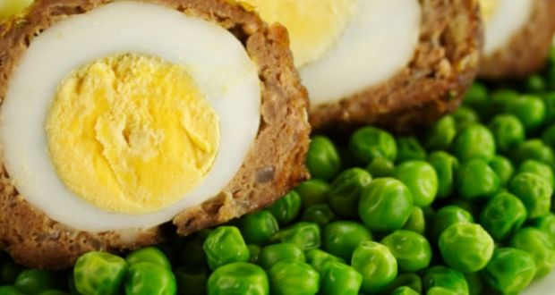
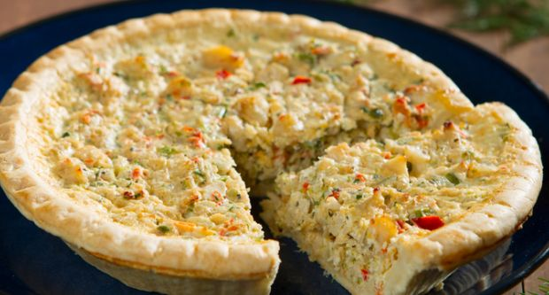
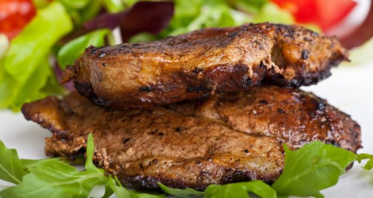
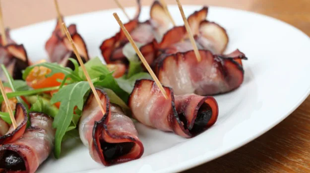

Lemony, caper-topped, and just buttery enough, chicken piccata is an easy weeknight supper that’s easy to love, and so very fast—just ten minutes from sauté pan to table.
Crispy Calamari Rings
A quick and easy snack recipe, calamari rings are basically squid rings deep fried in tempura batter and served hot and crispy alongside parsley sprig and thai chilli sauce.

Scoth Eggs
A Scotch egg is a boiled egg wrapped in sausage meat, coated in breadcrumbs and baked or deep-fried. A British favourite, hard boiled eggs cased in minced meat and fried.

Prawn Pie
Almost everything goes well with this creamy pie recipe. Prawn pie is super rich and is best for small portions as an appetizer at dinner parties. A comforting, hearty dish with a unique twist, this Indian-inspired Prawn Pie is a twist on the classic shepherd’s pie, a MUST-TRY!

Chicken Steak
An American cutlet like dish with large and tender chicken pieces marinated well, bursting with flavours of spices. Chicken pieces are sizzled on a pan till they're cooked just right. Just what you can cook for a lazy weekend dinner!It is fried with a technique similar to the more common fried chicken.

Bacon Wrapped Dates
Bacon-wrapped foods are prepared by being covered in bacon. Dates stuffed with cream cheese wrapped in strips of bacon and leek. This is traditionally made with prunes and popularly known as 'Devils on Horseback'. It is commonly served as part of a Christmas feast.